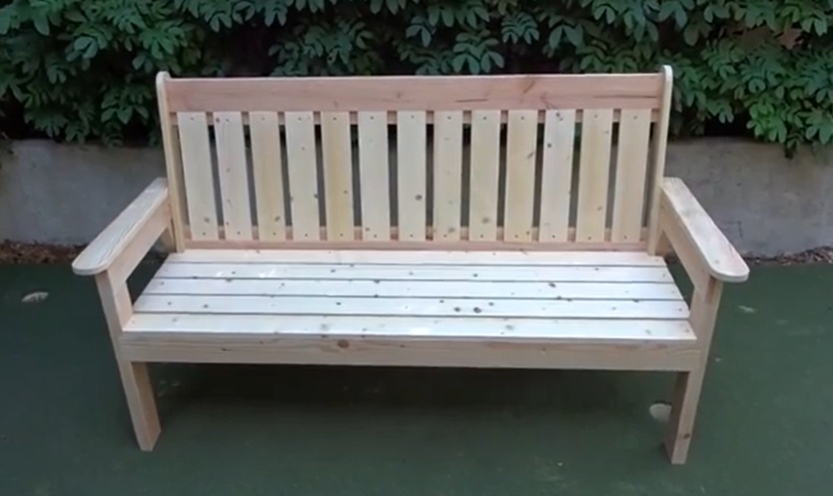

This is a great way to help fund this project and commemorate a loved one. Once The Wall That Heals is set up, benches will form “the sacred arch”. This imagery arch closes the angle formed by The Wall creating a quiet space for reflection and to honor those who paid the ultimate sacrifice. These benches were made by students from the Olympia Master Builders program who meet at the South Puget Sound Community College Lacey Campus.
A Bench Dedication means a plaque will be placed on one of the eight benches with the name, rank, branch of service, date of birth and death if applicable/or dates of service, and a short message. The cost per dedication is $600. If you would like to dedicate a bench and take it home after the exhibit you can do so for $1500. All proceeds will go toward funding The Wall’s visit to Lacey.
For more information or to dedicate a bench contact Jorge Castillon at thewallthathealslaceywa@gmail.com
The benches are currently being stained but will look like this.
